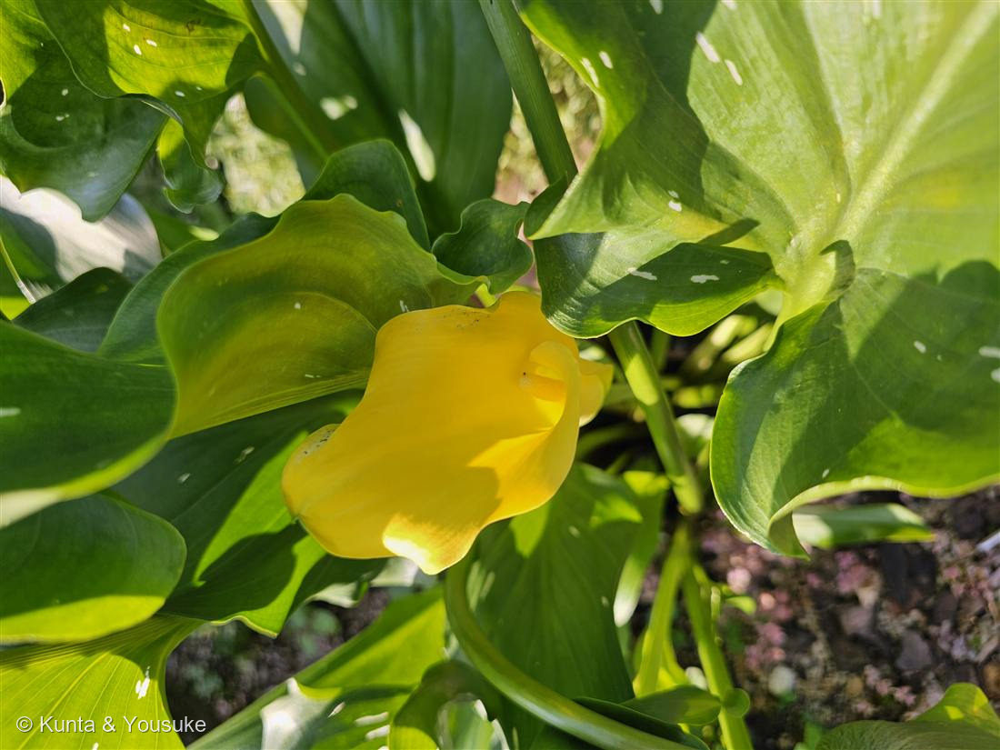

カラー（キバナカイウ／黄花海芋）
Zantedeschia elliottiana（またはエリオティアナ系交雑）
英名 · golden calla ／ サトイモ科の「送粉のトリック」一族の、正直者
サトイモ科 · Araceae（オランダカイウ属 Zantedeschia）
燻太さんの問い「サトイモ科の植物だけど、黄色の仏炎苞が目を引くね。誰が花粉を運んでくれるのかな？」……その問いは、サトイモ科でいちばん面白いところを突いていた。
⭐ まず ── あの黄色いラッパは、花びらじゃない
- 燻太さんの「サトイモ科」「黄色の仏炎苞」、どちらも正解。
- あの黄色いラッパ＝仏炎苞（ぶつえんほう）＝葉が変形した“看板”。
- 本当の花は、中の黄色い指（肉穂花序＝スパディックス）にびっしり付いた、花びらのない小さな花たち。写真の苞のすきまから、その黄色い指がのぞいている。
- 上のほうが雄花、下のほうが雌花（MOBOT「males on top and females below」）。
- → 「見た目と正体がちがう」小道の15人目。047 ダリアの「一輪じゃなかった」と、すぐ隣の話だね。
- これは 020 フィロデンドロン と同じサトイモ科（図鑑2種目）。仏炎苞＋肉穂花序は、この科の顔だよ。
⭐⭐⭐ 「誰が花粉を運ぶのか」── サトイモ科の中で、この子だけ答えが違う
- サトイモ科は「送粉のトリック」で有名な一族。でもカラーは、その一族の“正直者”なんだ。
ふつうのサトイモ科（＝わなと詐欺）
- 多くのサトイモ科（ヨーロッパの Arum maculatum、ザゼンソウ、コンニャク、ショクダイオオコンニャク）は——
- 花序を発熱させる（周囲より15〜20℃も熱くなる種もある）。
- その熱でうんち・死肉・キノコのような匂いを気化させて飛ばす。
- だまされて来たハエやコバエを、筒の中に一晩とじこめる（脱出できない毛のわな）。翌日、花粉まみれにして逃がす＝報酬なしの「詐欺と監禁」。
- ⭐マムシグサ（Arisaema）＝日本のサトイモ科の、この“わな型”の代表。（→ おまけにした）
カラーは、そのどれもやらない
- 仏炎苞が大きく開いている（閉じた牢屋じゃない）。
- 匂いはうっすら、いい香り（腐臭じゃない）。SANBI「faintly scented」。
- その香りでコガネムシ科の甲虫・ハチ・地面を歩く虫を、とじこめずに招く。報酬型のもてなし。
- ⭐雄花と雌花が熟す時期をずらして（雌雄異熟）、自分の花粉で自分が受粉しないようにしている＝他家受粉をうながす。SANBI「the anthers of each flower ripen before the ovaries」。
⚠熟す順番（雄が先か雌が先か）は資料で記述が割れているので、「時期をずらす」という事実だけを確かなものとして書く。 - ⭐白いオランダカイウ（Z. aethiopica）では、真っ白なカニグモが仏炎苞の白にまぎれて隠れ、来た虫を待ち伏せて食べる（SANBI）＝送粉の待ち合わせ場所を、狩り場に使う捕食者。※これは白い種の話。黄色いこの子で同じことが起きるかは不明。
- → 🦋「だれを呼ぶための花か」小道へ。監禁でなく“もてなし”を選んだサトイモ科。
で、この花壇では、誰が運ぶ？
- ⚠正直に言うと、たぶん「誰も、種のためには運んでいない」。
- 本種は南アフリカ原産（しかも園芸交雑起源らしい＝MOBOT「may be of garden origin」）。本来の送粉者のコガネムシは、日本にいない。
- でもカラーは塊茎（芋）で殖える＝人が株分けで増やす。種で殖える必要がないから、送粉者がいなくても花壇はにぎわう。
- → 046 サルビアと同じ「本来の客が来ない国で咲く花」。でもカラーは芋で殖えるから、それでも困らない。
育て方のポイント（初夏に咲く球根植物）
- ☀ 光
- 日なた〜半日陰。
- 💧 水やり
- 湿り気を好む（もともと湿地・水辺の植物）。乾かしすぎない。ただし球根が過湿で腐ることがあるので水はけも大事。
- 🌡 冬
- 寒さに弱い（USDA 9-10）。霜の前に塊茎を掘り上げて室内で保存するか、暖地では植えっぱなし。
- ⚠ 毒
- サトイモ科の特徴でシュウ酸カルシウムの針状結晶を含む。汁がつくと口・のど・肌がヒリヒリする（020 フィロデンドロンと同じ）。口にしない。
学名の由来と、この植物のこと
- Zantedeschia＝イタリアの植物学者・医師 ジョヴァンニ・ザンテデスキにちなむ。
→ 003・027・028・029・036・040・045・047 に続く、「人の名前をもらった花」の9人目。 - elliottiana＝園芸家 エリオットにちなむ。
- 和名 カイウ（海芋）＝「海をわたってきた芋（サトイモの仲間）」。白花のオランダカイウに対して、黄色いこの子はキバナカイウ。
- ⚠「カラー（calla）」は本当は別属の名前。リンネが最初 Calla 属に入れたなごりで、園芸名だけ残った（041 ニオイゼラニウムが「ゼラニウム」じゃないのと同じ、名前の取り残し）。
- 白斑の葉＝エリオティアナ系（黄花カラー）の目印（白花のオランダカイウは葉に斑がない）。写真の葉にも白い斑点が散っている。
- ⚠品種名は特定できなかった。「野生には見つからず園芸交雑起源らしい」ので、エリオティアナ系までにとどめる。わからないことは、わからないと書く。